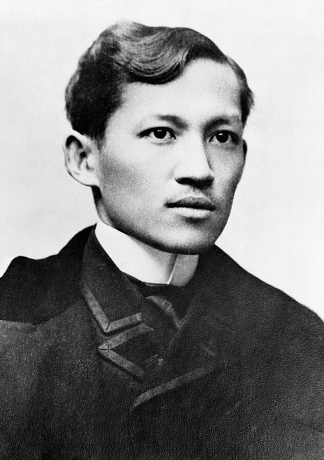

Dr. José Rizal
Philippines' National Hero

National Hero of the Philippines. Rizal was a doctor, novelist, linguist, and reformist who used education and literature to fight colonial oppression.
Timeline of Dr. José Rizal
- June 19, 1861 – Born in Calamba, Laguna, Philippines
- 1872 – Enrolled at Ateneo Municipal de Manila
- 1877 – Finished Bachelor of Arts with highest honors (age 16)
- 1878–1882 – Studied Medicine at University of Santo Tomas
- 1882–1884 – Continued studies in Madrid, Spain; earned Licentiate in Medicine
- 1885–1887 – Specialized in Ophthalmology in Germany
- 1887 – Published Noli Me Tangere in Berlin
- 1891 – Published El Filibusterismo in Ghent
- 1892 – Founded La Liga Filipina; exiled to Dapitan
- 1892–1896 – Exile in Dapitan: doctor, teacher, engineer, and reformist
- Oct. 1896 – Arrested and sent to Manila for trial
- Dec. 30, 1896 – Executed at Bagumbayan (Luneta), aged 35
- Posthumous – Honored as a national hero; December 30 is Rizal Day
Learn more about the tribute here.